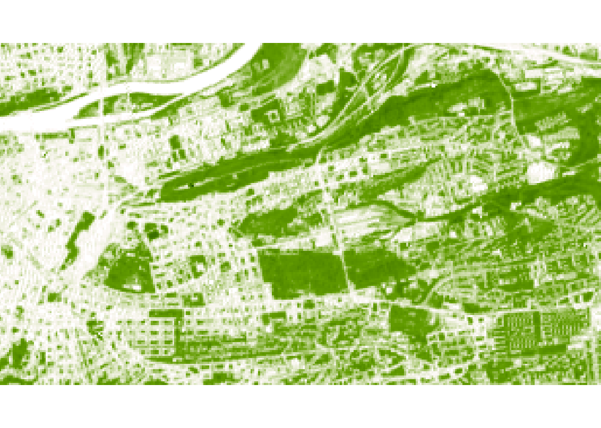
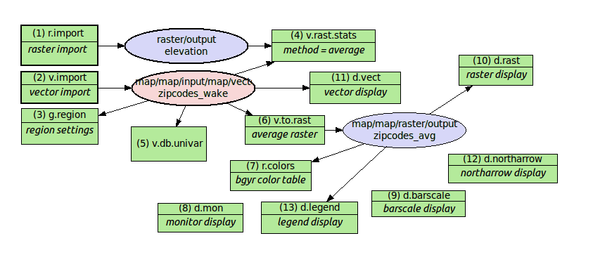
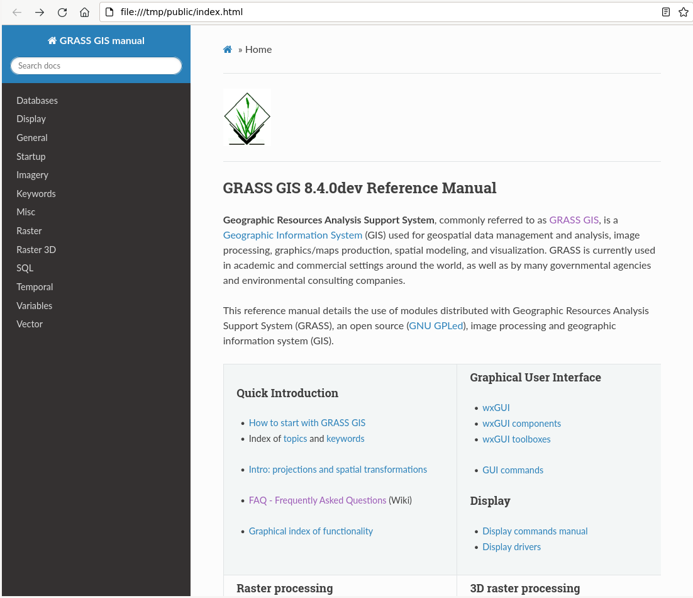
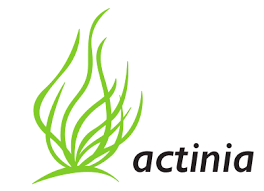

State of GRASS GIS
Martin Landa
& Markus Neteler, Verónica Andreo, Vaclav Petras, Anna Petrasova, Ondrej Pesek, Linda Karlovska

FOSS4G 2023 - Prizren, Kosovo
About the presenter...
- Department of Geomatics, Faculty of Civil Engineering,
Czech Technical University in Prague (CZ) - PhD in Geodesy and Cartography
- FOSS4G enthusiasts, a freelance programmer
- Since 2003 active in the GRASS GIS project


For newcomers: what is GRASS GIS?
- GRASS GIS (Geographic Resources Analysis Support System), a FOSS suite used for geospatial data management and analysis, image processing, spatial modeling, and visualization.
- Originally developed by the U.S. Army CERL for land management and environmental planning (1982-1995).
- Founding member of OSGeo (2006)
- 40 years of continuous geospatial development


All-in-one software suite
- All matured tools available right away
- Download of experimental tools possible
- Network analysis, hydrology, remote sensing, vector topology, time series, …

Roadmap
- 8.2.0, Jun 2022 Presented on FOSS4G 2022.
- 8.2.1, Jan 2023 Stability and fixes.
- 8.3.0, Jun 2023 Single window interface as the default.
- major.minor.micro – semantic versioning:
- major (x) brings features and possibly backward incompatible changes
- minor (x.y) brings features and fixes,
- micro (x.y.z) brings fixes,
- RFC: Version Numbering

Exciting new features in GRASS 8.3+
Skeletons and Centerlines
v.voronoi tool can now create area skeletons and centerlines.
by Markus Metz
Soil line slope support for vegetation indices
Adding the possibility to define the soil line slope for indices in i.vi.

In the picture: Comparison of PVI computed with soil line slope 0.80 (left) and 0.99 (right).
by Ondrej Pesek
PyWPS export in GRASS GIS modeler

Automatic export of GRASS GIS models as PyWPS scripts. More info in the documentation.
by Ondrej Pesek
Improved Jupyter Notebooks integration
Python library grass.jupyter for easy and interactive visualization in Jupyter notebooks.


- more stability fixes
- used in several new workshops and tutorials, e.g. github.com/ncsu-geoforall-lab/grass-gis-workshop-foss4g-2022
- new SeriesMap for animated raster/vector series in PR 3036
by Caitlin Haedrich, Vaclav Petras, Anna Petrasova
Faster External Data Links
r.external links (opens) external raster data (GeoTiffs, …) faster.(2-5× faster, or almost no time for some workflows)

by Markus Metz
Great for workflows when only portion of the data is processed in GRASS GIS.
Streamlined C and C++ code maintenance
- All GCC -Wall -Wextra warnings fixed
- Clang-Format applied
- Warnings and formatting checked in CI

by Nicklas Larsson
More parallelization in GRASS 8.3
New in GRASS GIS 8.3
Parallel C tools (OpenMP)
- r.univar
- r.resamp.interp
- r.resamp.filter
Parallel Python tools
- t.rast.univar
- t.rast3d.univar
+ fixes in other parallel tools and benchmarks
by Aaron Saw Min Sern, Stefan Blumentrath and Anna Petrasova
More parallel tools
- Core tools: r.series, r.neighbors, r.patch, r.mfilter, r.slope.aspect, r.sun, v.surf.rst, r.sim.sediment, r.sim.water
- Addon tools: r.sun.daily, r.in.usgs, r.mapcalc.tiled, t.rast.what.aggr, r.connectivity.corridors, r.viewshed.exposure, and 14 more
-
Parallelizing custom Python scripts:
- Data parallelization: GridModule
- Task parallelization: multiprocessing, ParallelModuleQueue
A better GUI experience in GRASS
Improved First-time User Experience in GRASS 8


Improved First-time User Experience in GRASS 8
Initial project sets up automatically. Guidance provided for next steps.
by Linda Karlovska & rest of the community (many reviews, calls, user surveys, …)
Single-Window GUI in GRASS 8.2+
- One GUI window with optimized layout with dockable widgets.
- Default in 8.3+
- Many improvements and fixes to support various platforms

by Linda Karlovska
Improving Single-Window GUI user experience - GRASS mini project 2023
- Undocking map display notebook page
- New layout of the Console pane

by Linda Karlovska
Dark Theme Support
- Interface respects system dark theme.
- New: fixes for Graphical Modeler

by Anna Petrasova, Nicklas Larsson, Martin Landa
Selected addons contributed by the community

Hydro-flattening a DEM
r.hydro.flatten derives single elevation value for water bodies based on lidar data.
addon by Anna Petrasova
Random walk simulation
r.random.walk generates a 2D random walk with multiple parallel walkers and different walker's behavior.

addon by Corey White
Boxplots in space-time raster data set
t.rast.boxplot draws boxplots of the raster in a space-time raster data set.

addon by Paulo van Breugel
Thredds Data Server
m.crawl.thredds crawls the catalog of a Thredds Data Server (TDS) starting from the catalog-URL. It is a wrapper module around the Python library thredds_crawler.

addon by Stefan Blumentrath
Get involved! Your contribution is welcome!

Code contributions
GRASS GIS development is GitHub-centered: core, addons, website
- Fill bug reports or feature requests
- All issues and PR's are publicly visible
- Ask, comment, suggest also in Github Discussions
- "Fork me on GitHub" and suggest changes or fix bugs via pull requests
- Create your own addon! See this nice workshop for a guideline: How to write a Python tool for GRASS

Other contributions are relevant too!
- Translations: we use OSGeo Weblate
- Documentation: start by fixing typos in manual pages, add examples where missing, create cool screenshots, write tutorials in the wiki, etc.
- Contribute material for our social media
- Write a blog post for our website
- Bring your own ideas!
Sponsoring: how to...?
- Individuals:
- Time: organize community events, fix typos, translate, …
- Money: opencollective.com/grass/contribute
- Organizations:
- Time: employee time for new developments
- Money: become a regular sponsor with annual contributions or pay developers (or companies) to add features or fix bugs
"One of the greatest benefits of GRASS GIS is that its environment gives us a plethora of options for manipulating data and testing/designing our automation/workflow processes."
Student grants program: coding for money!
- GRASS GIS offers a limited number of student grants.
- These can include actual coding, bug fixing, or documentation and the creation of educational resources.

GRASS celebrated 40(!) in Prague

GRASS Community Meeting Prague 2023
GRASS users, supporters, contributors, power users and developers met from June 2 to 6, 2023 in Prague (CZ)
GRASS Community Meeting Prague 2023
Work and party

GRASS Community Meeting Prague 2023
Thanks to sponsors!!!
- OSGeo (7300 USD), FOSSGIS (5000 EUR)
- OSGeo Japan (550 USD) and many individials
- Venue: Department of Geomatics, Faculty of Civil Engineering, Czech Technical University in Prague

GRASS Community Meeting Prague 2023 - Selected outcomes
GRASS GIS 8.3 Release
- More than 360 improvements and fixes!
- See release notes on GitHub
Progress in transition to CMake
- Full build on UNIX environment
- PR 3021
- Thanks to Aaron Saw Min Sern, Loïc Bartoletti and others
New docker hub organization: mundialis -> OSGeo
- The GRASS GIS docker images are currently being moved from mundialis to the OSGeo Docker Hub organization

by Carmen Tawalika (with support by Markus Neteler)
Graphical Modeler integrated in Single-Window


by Martin Landa (work in progress PR 3003)
Conversion of the manual to Markdown/mkdocs
Initial work on conversion from HTML to Markdown/mkdocsGoal: easier to maintain and more friendly to collect user contributions

by Markus Neteler
Conversion of the manual to Markdown/mkdocs
Initial work on conversion from HTML to Markdown/mkdocsGoal: easier to maintain and more friendly to collect user contributions
by Markus Neteler
actinia export in GRASS GIS modeler

Automatic export of GRASS GIS models as actinia workflows/templates. Pull request #3005 hanging.
by Ondrej Pesek
Thanks for your attention!!
ctu-geoforall-lab.github.io/grass-gis-talk-foss4g-2023/foss4g2023.html
GRASS GIS
Bonus material
Land-use/Land-cover from Sentinel-2
r.incora is a multi-addon to derive LULC and change detection maps from S2 scenes incl. creation of training points from a set of rules.addon by mundialis, Germany
i.sentinel_2: new tools for Sentinel-2
- i.sentinel_2.parallel.index: calculates different indices in parallel
- i.sentinel_2.sen2cor: runs atmospheric correction on a single Sentinel-2 L1C scene using ESA's sen2cor
- ... more to come.
addon by mundialis, Germany
i.svm: Add Support Vector Machines-based image classification
A pair of modules revealing most of features of libsvm to GRASS. Libsvm is a popular library used in many machine learning programs (including scikit-learn).
PR 2189 by Maris Nartiss